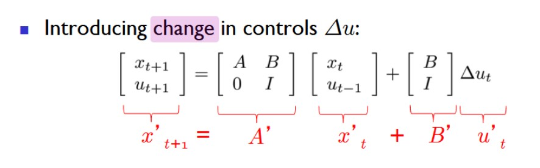
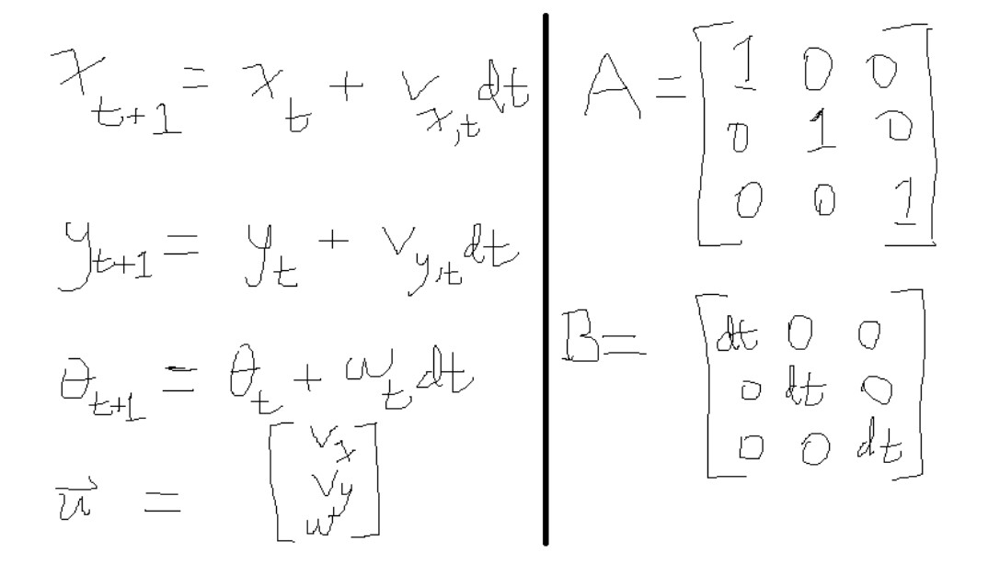
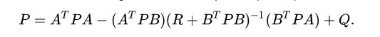
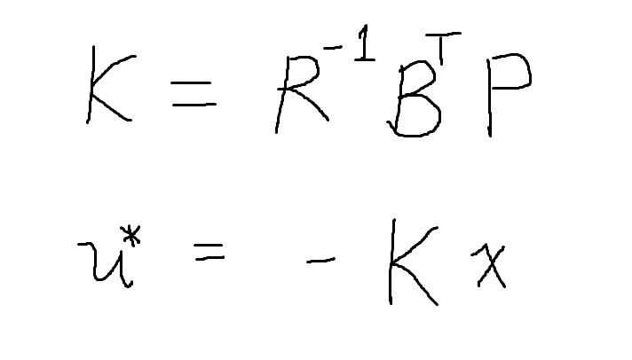
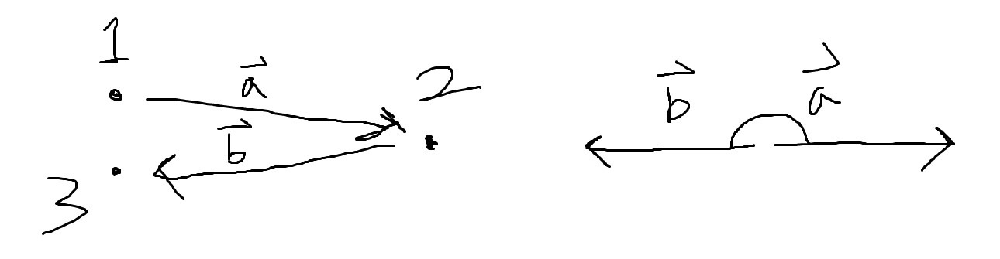
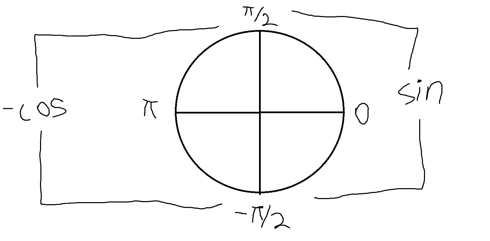
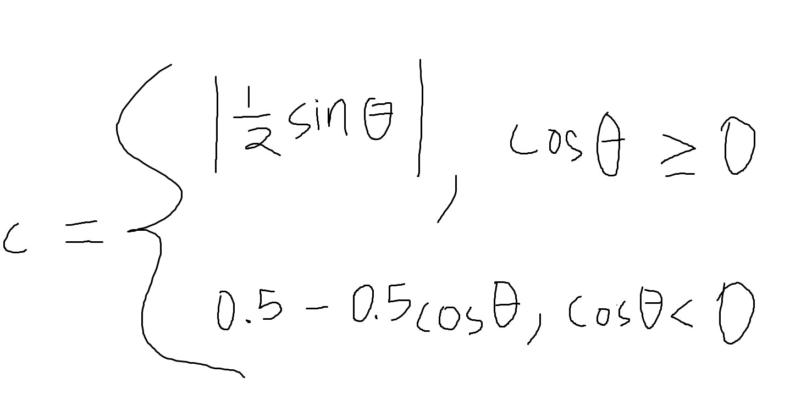
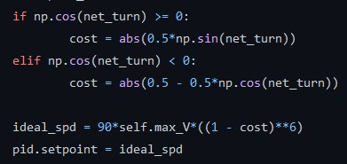
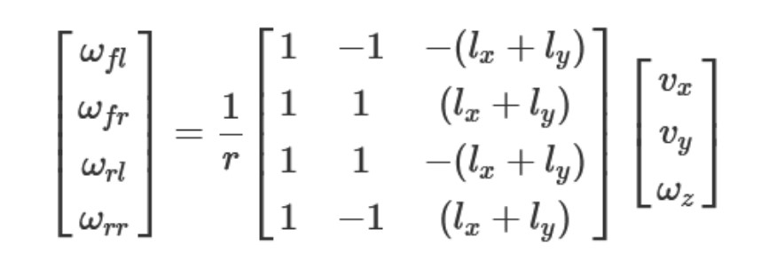

Linear Quadratic Regulator for Mecanum Drive
(If you have seen my differential steering controller, you can skip this first section)
For my testbed project, I needed a method of controlling robots to follow their
respective paths. Controlling mobile robots in the context of motion planning is
essentially an issue of trajectory tracking. I opted to implement linear quadratic
regulators, a type of optimal feedback controller that is similar to the robust
MPC controllers used in self-driving cars. I designed two different discrete-time
LQR's to be used for differential and mecanum drive robots. This page will cover
my implementation of mecanum drive control.
Above is the state-space model and quadratic cost function for a discrete-time LQR, hence giving it the name 'linear quadratic regulator'. The vector x_t represents the current state of the system, u_t represents the control action at the given moment, and x_t+1 is the next state. The cost function g is essentially the sum Qx^2 + Ru^2 that the LQR seeks to minimize. Since Q and R assign coefficients to the costs of the x and u squred terms, they punish the magnitude of the state and control action respectively: at every given time frame, the cost of controlling the system is weighed against the cost of the state to calculate the optimal control action. For our purposes, the LQR finds a balance between its deviation from its path and its velocity.
However, my system dynamics yielded unwanted behaviors: the mecanum drive controller asymptotically approached waypoints. To solve this, I re-formulated the linear model to account for past control actions within its state, thus controlling its change in velocities. The new state-space model can be seen above. One downside to this new model is that state estimation becomes more difficult—the controller now relies on both position and velocity feedback to be functional.
Shown above are the state variables, control vector, input matrix, and control matrix. The state vector is defined by the robot's x and y coordinates alongside its orientation as an angle. Since mecanum drive is omnidirectional, the total velocity of the robot can be split into individual velocities spanning the x, y, and angular directions. At a given moment, the next state is a function of its current state and these velocities. Thus, the control vector is defined by the three velocities. The control and input matrices A and B are straightforward: A poses the state vector as a square matrix, and B multiplies the control vector to allow it to appropriately add to the state.
Above is the discrete time algebraic Riccati equation, which helps solve for the optimal control policy that ties the linear state space with the quadratic cost function. By inputting coefficient matrices A, B, Q, and R into this formula, we can iteratively solve for P until a reasonable margin of error has been achieved.
The solution to the algebraic Riccati equation is used to calculate the optimal gain matrix K. The control policy is equal the state vector multiplied by this coefficient, which yields us an optimal control action at every time frame. Interestingly, unless the maximum velocity is limited to a small value (around 40 mm/s), the system experiences unwanted oscillations. In order to work around this, I implemented a PID controller that maintains the speed separately from the LQR; the LQR itself is only be responsible for the directions of its velocities. Additionally, to make the trajectory tracking more accurate and robust, I implemented a novel solution for the controller to be able to "see" incoming sharp turns and reduce its speed accordingly.
Imagine the sequence of waypoints in the image above. The sharper this turn is, the more parallel the displacement vectors a and b become, all while pointing in opposite directions. Following this logic, the "worst-case" turn will have two adjacent displacement vectors in perfectly opposing orientations; in other words, the system's speed must be minimal at 180 degrees. Conversely, speed is maximized at 0 degrees. With this information, we can assign a rule to punish speed accordingly. The setpoint for the speed controller at each given point is a function
From what has been established, we know that the punishment must be minimized at a change in angle of 0, and maximized at a difference of 180 degrees or pi radians. Fortunately, the absolute value of the sine function has a local minima at 0, while the cosine function has a local minima at pi radians. Taking the negative of cosine yields a maximima at pi radians, which satisfies our need for a minimum at 0 and a maximum at pi.
Above is the piecewise function that penalizes speed. The cost C starts as 0 at 0 radians. As the angle approaches pi as it crosses the unit circle from either 0 to pi or 0 to -pi, C approaches 1. Using this piecewise, I am able to dynamically manipulate the PID's setpoint as a function of C.
Above is a method of changing the setpoint as a function of the cost C that I found through trial and error. As you can see, the setpoint is minimized when cost = 1, or when the net turn is pi radians. The opposite is true when the turn is measured to be 0.
The final component of this controller is the inverse kinematic model for a four-wheel mecanum drive system. The leftmost vector represents the angular velocities of the front left, front right, rear left, and rear right wheels (in that order). The constants lx and ly are equal to the half-lengths of the width and height of robot's chassis. Finally, the input vector consists of the x, y, and angular velocities. Not coincidentally, this velocity vector is the same as the control action used in the LQR. In other words, using this formula, we can solve for the angular speed of each individual wheel that will achieve the motion described by the velocity vector. This is useful for mecanum drive robots that must be interfaced through motor actuation: the angular speed of each motor can correspond to an optimal level of actuation. For every control action calculated, there is a corresponding output for each wheel.
My results can be viewed in the demonstration above, where the controller is tasked with tracking a parametric lissajous curve. The code for this controller can be found here.